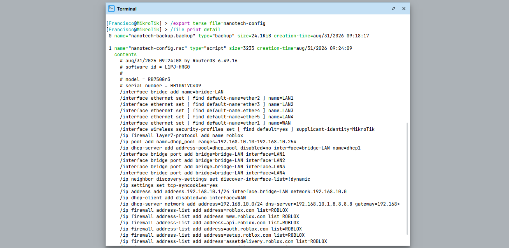
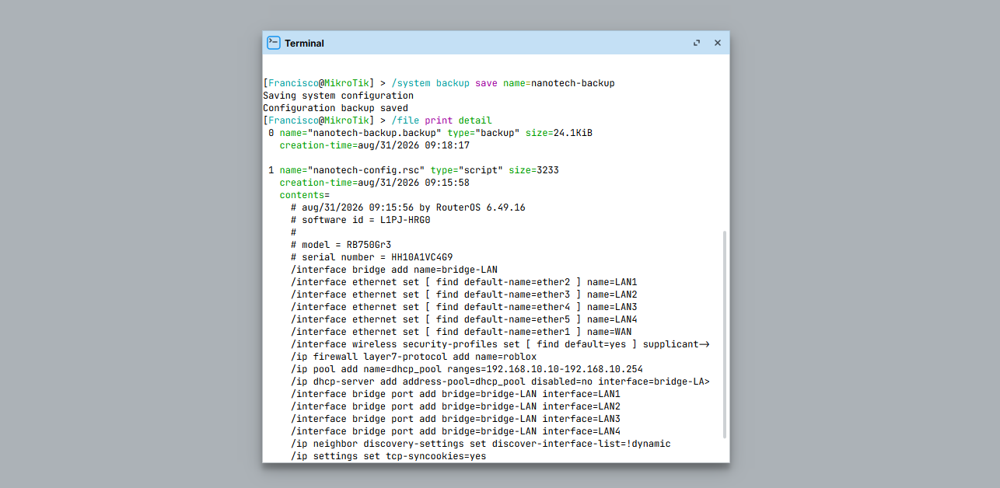
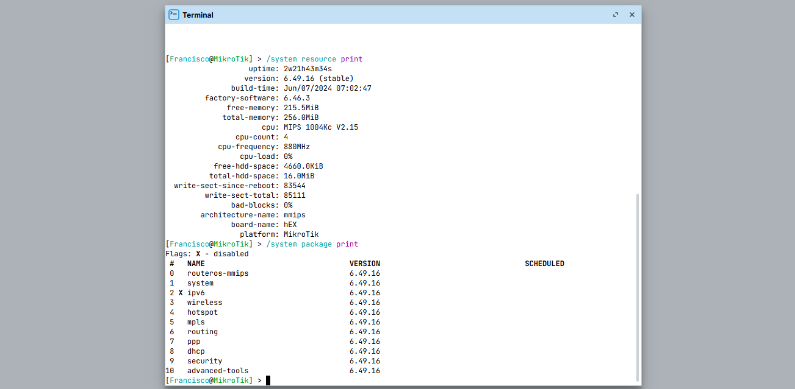
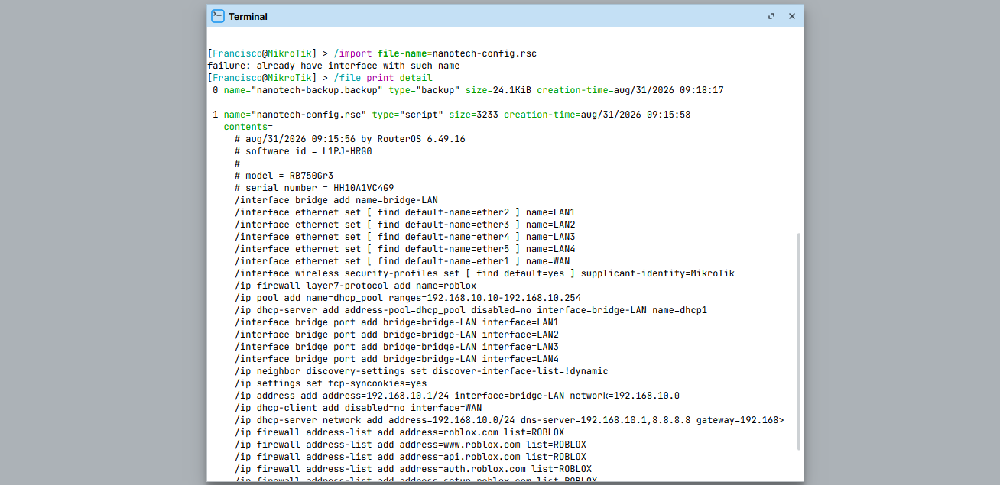

Introducción

Cómo conservar una copia legible y una copia binaria antes de cambios importantes. La guÃa busca que puedas separar causas antes de sustituir componentes.
Antes de empezar: seguridad
Desconecta el equipo cuando corresponda y no realices mediciones peligrosas sin formación e instrumental. En baterÃas, fuentes y placas, detén el procedimiento si detectas daño fÃsico, lÃquido, olor extraño o calor anormal.
- Documenta el estado inicial.
- Haz una sola modificación cada vez.
- Conserva tornillos, cables y configuración original.
Herramientas
1. Exportar configuración
El export produce comandos legibles.

/export terse file=nanotech-config/file print detailEjecuta primero la consulta cuando sea una etapa de diagnóstico. Si modificas la configuración, vuelve a ejecutar la consulta y compara el resultado. Adapta interfaces, subredes, listas WAN/LAN y nombres a tu topologÃa.
2. Crear backup binario
El backup permite clonar la configuración del equipo en formato binario.

/system backup save name=nanotech-backup/file print detailEjecuta primero la consulta cuando sea una etapa de diagnóstico. Si modificas la configuración, vuelve a ejecutar la consulta y compara el resultado. Adapta interfaces, subredes, listas WAN/LAN y nombres a tu topologÃa.
3. Registrar versión
La compatibilidad importa al importar configuración.

/system resource print
/system package print/system routerboard printEjecuta primero la consulta cuando sea una etapa de diagnóstico. Si modificas la configuración, vuelve a ejecutar la consulta y compara el resultado. Adapta interfaces, subredes, listas WAN/LAN y nombres a tu topologÃa.
Qué hacer
- Anota versión RouterOS.
- Anota modelo y arquitectura.
- Conserva una copia antes y después del cambio.
Registra el resultado antes de continuar.
InterpretaciónLa compatibilidad importa al importar configuración.
4. Probar restauración en entorno controlado
Una copia que nunca se prueba no es una estrategia completa.

/import file-name=nanotech-config.rsc/file print detailEjecuta primero la consulta cuando sea una etapa de diagnóstico. Si modificas la configuración, vuelve a ejecutar la consulta y compara el resultado. Adapta interfaces, subredes, listas WAN/LAN y nombres a tu topologÃa.
Qué hacer
- Valida el archivo cuando sea posible en un entorno controlado.
- No restaures sobre producción sin plan de retorno.
- Mantén acceso fÃsico o consola si el cambio es crÃtico.
Registra el resultado antes de continuar.
InterpretaciónUna copia que nunca se prueba no es una estrategia completa.
Diagnóstico final
Fuentes y notas
La documentación oficial de MikroTik distingue entre backup binario y exportación de configuración en texto. También recomienda usar una versión compatible al importar. Nunca publiques contraseñas, claves o archivos de configuración sensibles.